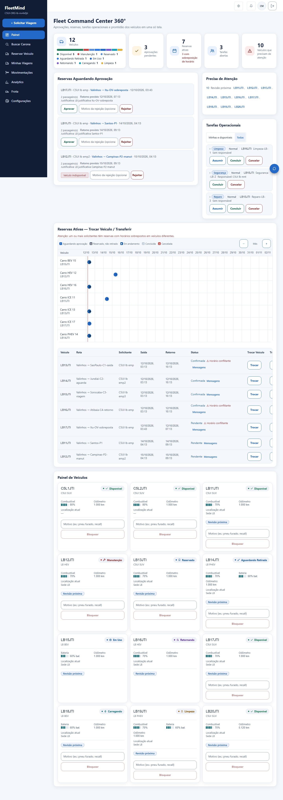
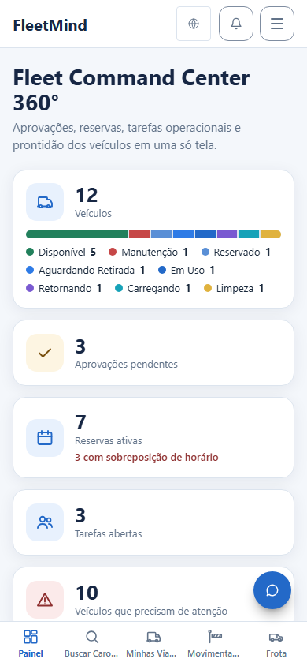
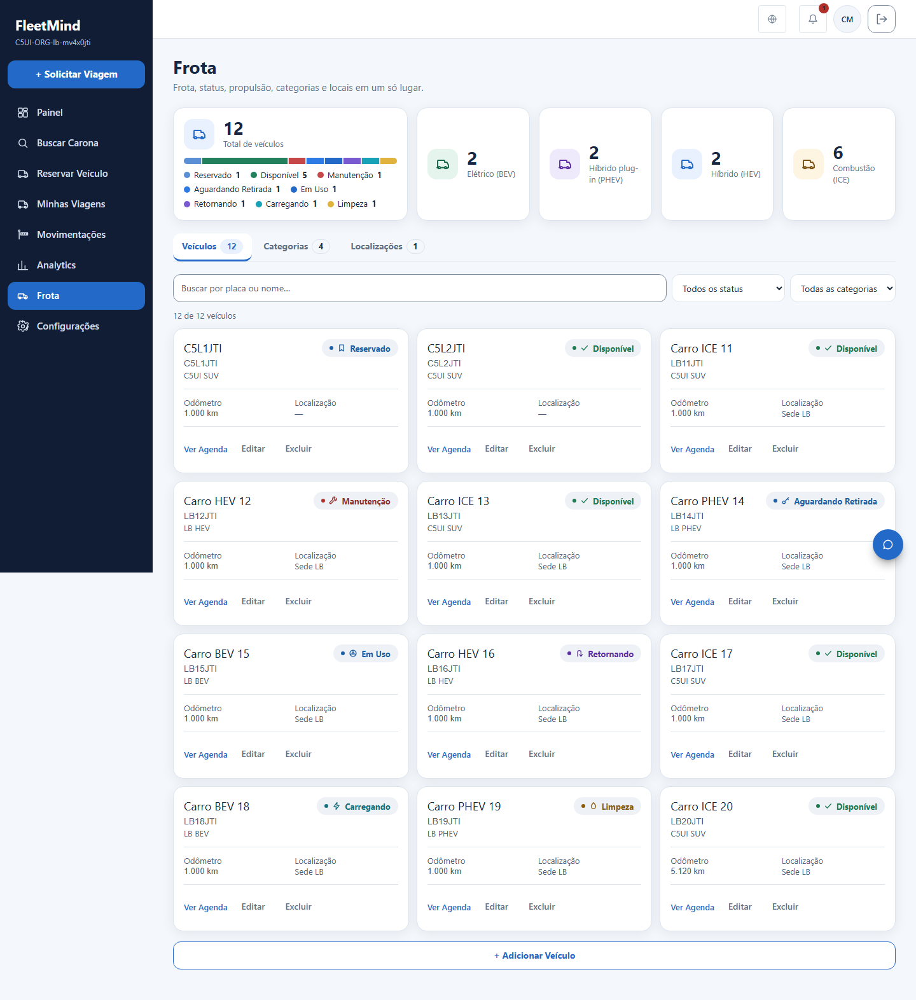
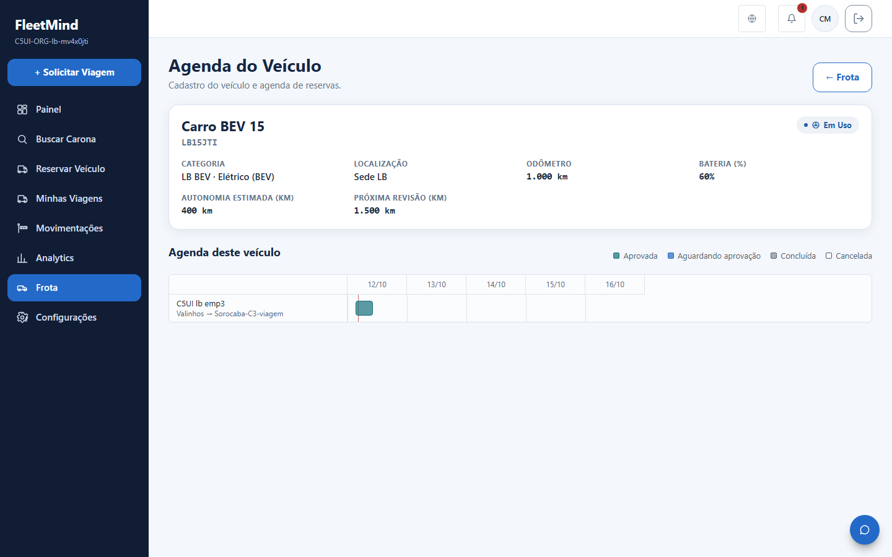
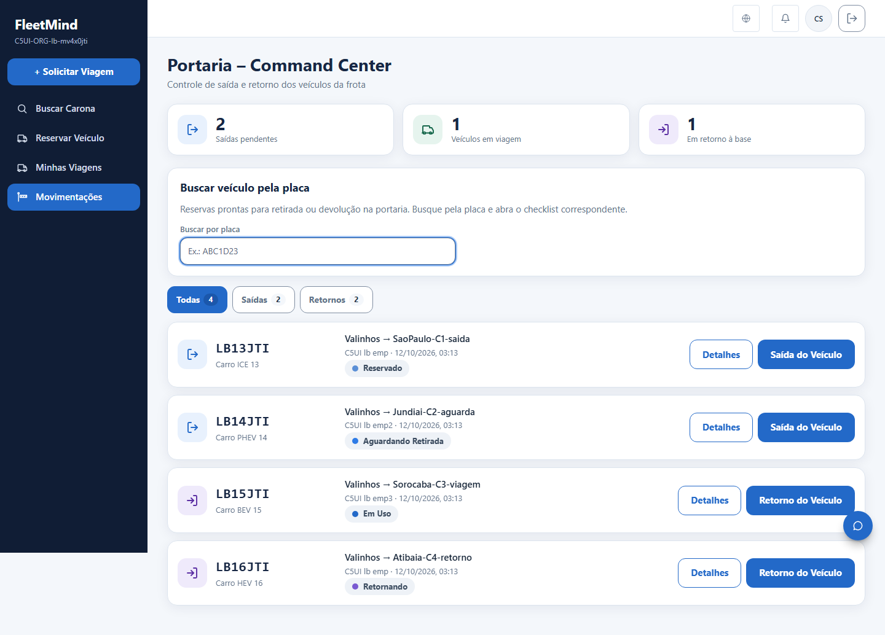
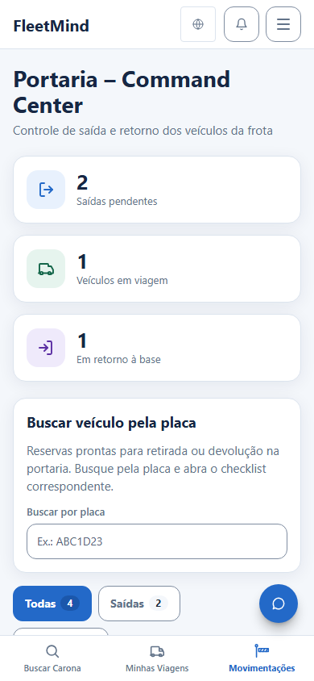
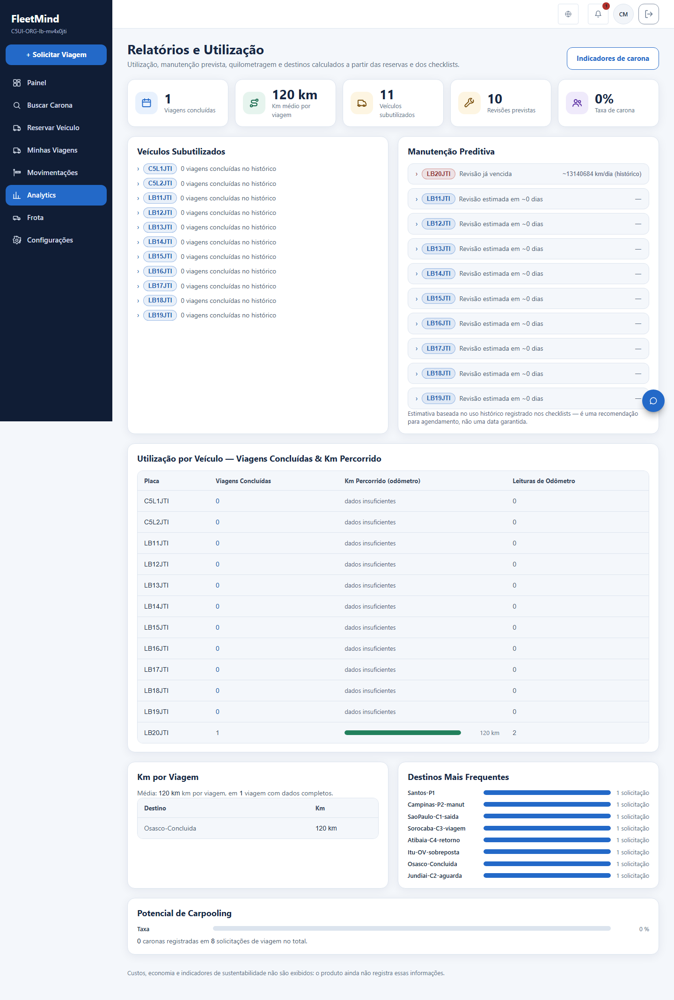
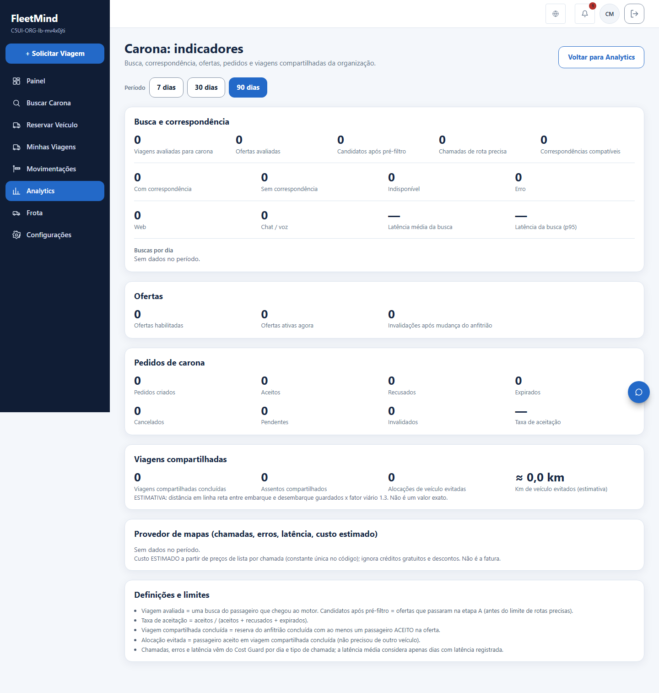
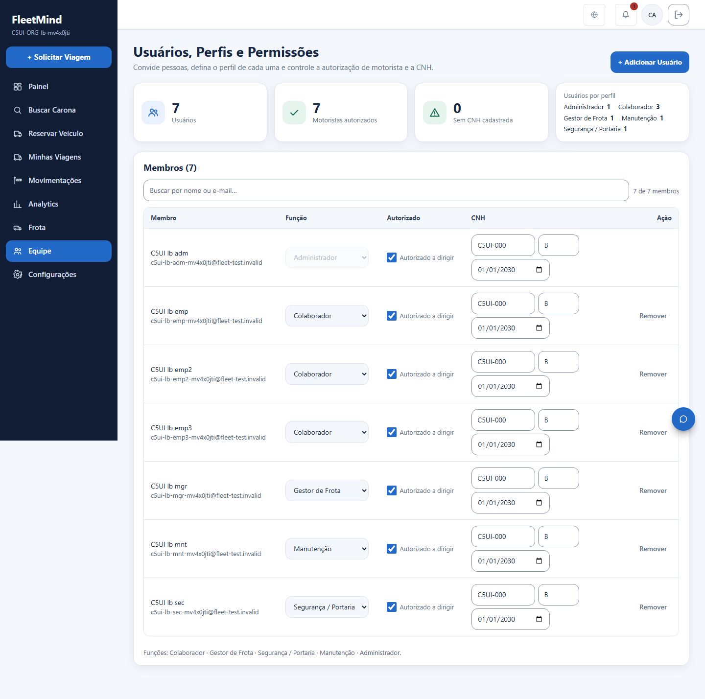
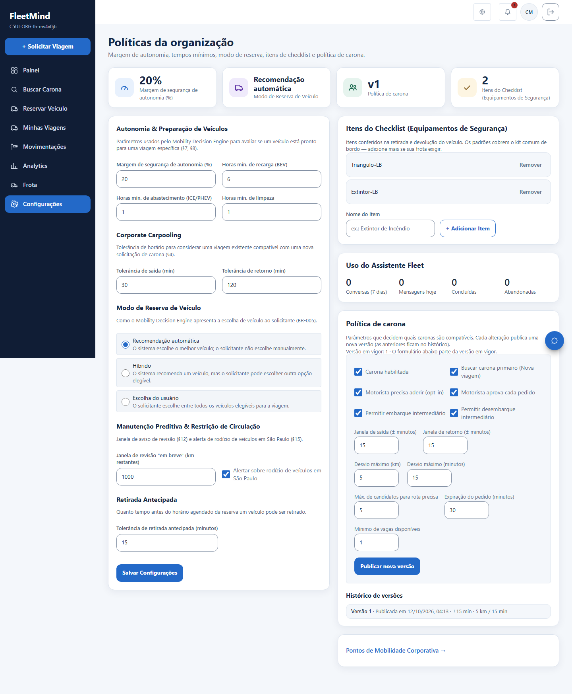

Arte = referência aprovada; ANTES = captura do lote 1; DEPOIS = captura real do build (mobile = viewport). Dados de teste fictícios (organização descartável já removida).

(sem equivalente na arte / ANTES)








